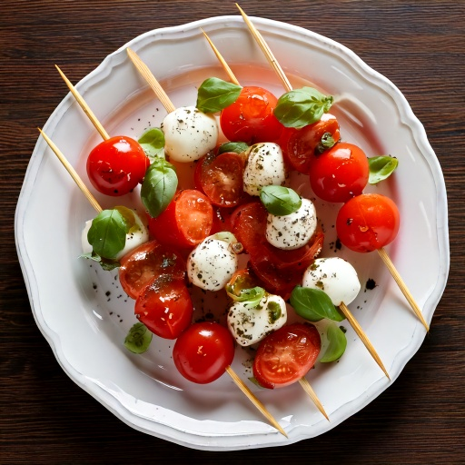

Mini mozzarella balls, cherry tomatoes, and basil on a skewer with balsamic glaze.
Nutrition (per serving)
199
Calories
6g
Carbs
13g
Protein
14g
Fat
1g
Fiber
~15
Est. GI
Why this fits a diabetes-friendly diet
At 6g of carbs per serving, it fits comfortably within most low-carb diabetes meal plans, and its estimated glycemic index of ~15 means the carbs it does have tend to digest slowly rather than spiking blood sugar fast.
Ingredients
- 4 oz fresh mozzarella
- 1 cup cherry tomatoes
- 1/4 cup fresh basil
- 1 tbsp balsamic vinegar
- 1 tsp olive oil
Instructions
- Thread mozzarella, a cherry tomato, and a basil leaf onto small skewers.
- Drizzle with olive oil and balsamic vinegar before serving.
In GlucoBeacon
This recipe is one of 150+ in the GlucoBeacon Recipe Library, each with full nutrition breakdown, glycemic index estimate, and one-tap logging straight to your blood sugar history. Get notified when GlucoBeacon launches →